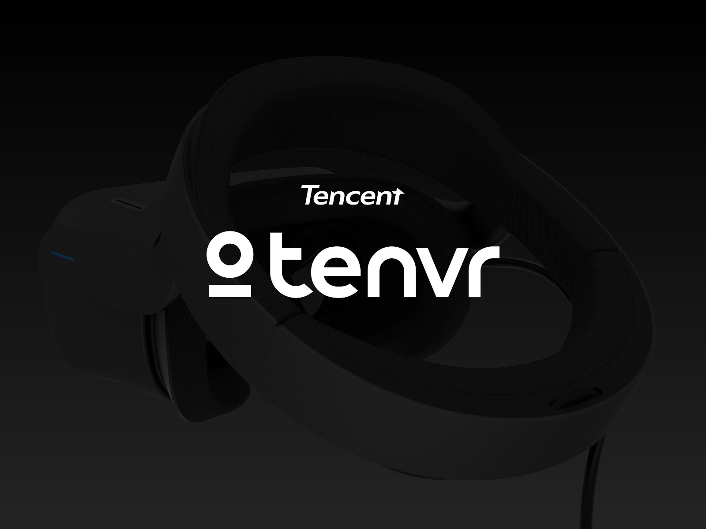
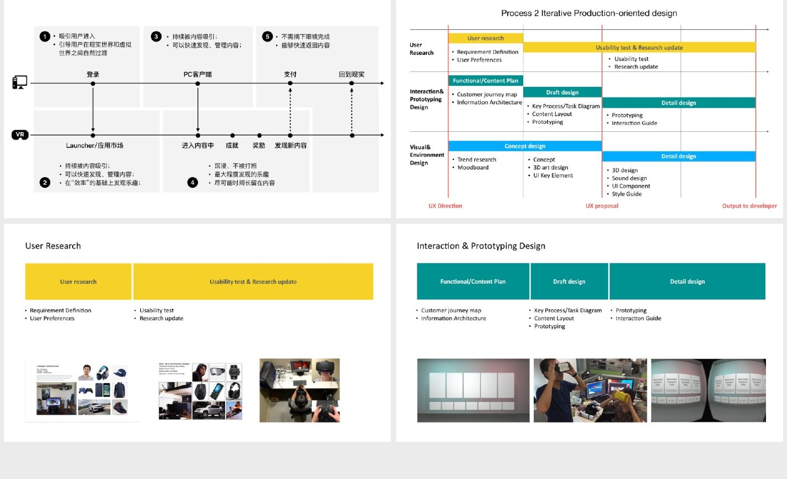
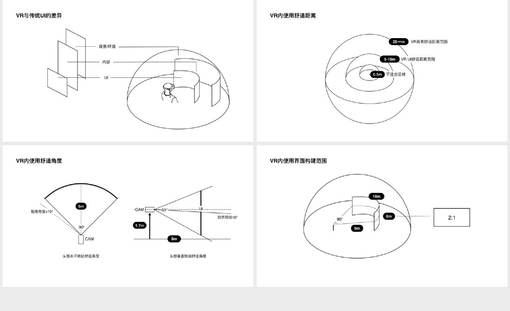
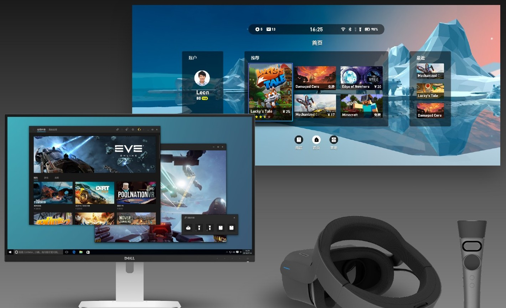

01
把流程设计放进沉浸场景
虚拟现实设备涉及佩戴、进入内容、操作与退出等连续环节。作品集从体验流程、设计阶段与研究验证出发，呈现产品体验的组织方式。
用研与原型验证帮助团队在界面之外关注实际使用过程，让设备、控制器与内容之间形成清楚的操作关系。

02
为三维环境建立界面规则
VR 界面不再依附于固定屏幕。内容距离、观看角度与布局方式直接影响信息的辨认和操作。
作品集以空间示意图整理界面与观看位置的关系，为后续 GUI 设计提供共同的空间依据。

03
从图形界面延展到产品识别
图形界面围绕内容浏览与入口组织，通过主内容区域、侧向导航和明确的选择状态表达信息层级。
相关设计同时延伸到标识、应用视觉与包装，让用户在不同接触点识别同一个产品。
图文依据：LIYOU PORTFOLIO 2024，第 30—36 页。
NEXT / 全部作品 ↗